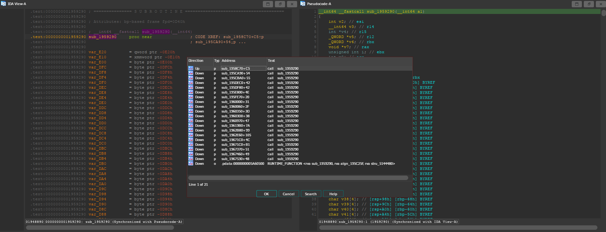
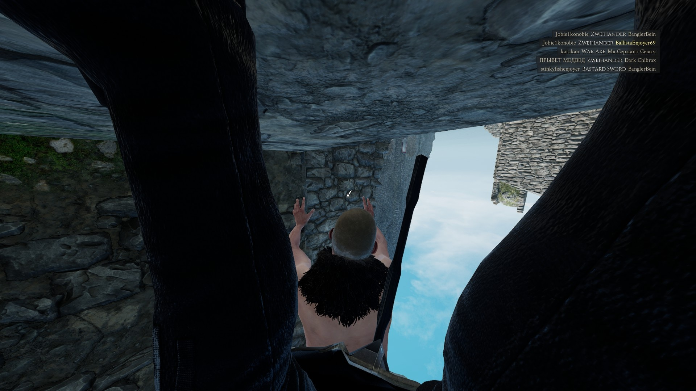

Mordhau: From reversing Unreal Engine 4 to breaking animations
Table of Contents
1. Introduction
Mordhau is a multiplayer video game made in Unreal Engine 4. I have been playing this game for a long time, and I made a lot of friends along the way. The best part of this game has not been its fighting mechanics, but how funny the people were.
1.1. The golden era of the game
There was a time where you could do a lot of funny glitches, like flying around. This was by far when I had the most fun with people. The game was so broken that you could fly anywhere, clip into stuff, and do much more.
You might think that people were using it to take advantage of people, but that was not the case. Instead, everyone was teaching glitches to each other, and goofing around. If someone was abusing a glitch, someone else could just use another glitch and kill them, or simply vote kick them.
However, they ended up patching most of the funny glitches, and even removing vote-kicks entirely. You could still clip into stuff and do other glitches, since the developers did such a bad job, but it was not the same.
The game is only available for Windows (and consoles), but you can still run it on GNU/Linux through Proton. A friend I met while playing told me about this, and it’s in fact what made me definitely switch from Windows to GNU/Linux on my main computer.
This means that any memory inspecting (more on this below) has to be done within the same wine prefix. I personally use this tool to accomplish that.
1.2. The amazing developer team
The developers of this game are terrible. In plenty of ways. They are bad at programming, they are bad at promoting their game, they are bad at basic decision making, and they are bad at moderating. Basically, they are not mature enough to handle a big game like this.
The game has no anti-cheat at all. You can read and write any values in memory, and change whatever you want as if this was Half-Life 1. I heard they had an anti-cheat at some point, but they removed it for some reason.
Not only do they lack an anti-cheat, but they look like they want people to cheat in their game. Years ago I noticed that they published an update with a PDB file, which contains very useful debugging information. I remember copying it quickly after noticing, because I obviously thought it was a mistake. Well, let’s have a look at the binaries folder now.
There it is, the third file on the list. They have been shipping the debugging information along the game for years. This is a big mistake, that allows anyone (with some reversing knowledge) to basically browse the source code of the game. I am assuming they don’t know what the file is, so they just leave it in the output folder because they assume that the game needs it.
You might also notice the suspicious .i64 files. In case the reader is not
familiar with reversing, these are 64-bit IDA Pro databases, and they will be
covered below.
As a side note, I think it’s very funny that this could happen to the developers
to begin with. I don’t know what they used to compile this program, but I think
the compiler/IDE should only generate this .pdb file when compiling in debug
mode, and not in release mode. I am not sure if this means that they are
shipping the debug version or not.
In any case, this is very funny, and it reminded me of how I didn’t know what object files were when I first started with C/C++, so I was not sure about including them on my git projects or not.
This article was been written in May of 2024, so keep in mind that they might
have actually removed the .pdb file after I spoon-fed this information to
them. If it’s still there, you can import it from IDA Pro, although the rest of
this article doesn’t asume you have imported it.
1.3. My motives
I like reverse engineering, and I enjoy a few video-games. That’s why, if I really enjoy playing a game, I might try to reverse engineer it, to see how it was done. Since I use GNU/Linux, I mainly enjoy reversing native Linux programs and games. Even if I really enjoy a Windows video-game, the reversing interest is usually not big enough to make me switch to Windows.
However, since I had been playing Mordhau for such a long time, I decided to give it a try and, through Proton, see if I could find something interesting. I did find a lot of interesting stuff. I already knew how bad the game was, but noticing how many things were client-sided definitely made me realize that the developers were clueless.
I knew I could get banned, because I found things that I had never seen anyone do before, but I decided that I had played the game long enough, and that I didn’t care if I got banned. I rather have fun my way, than just play normally to avoid getting banned. I even took notes on writing this article once I got banned.
I don’t particularly enjoy cheating, as in, getting an unfair advantage over other players. I like reversing and making cheats because I enjoy the low-level aspect of understanding a game enough to do something that the developers are actively trying to prevent you from doing. That was a long sentence, by the way.
And indeed, I started reversing the game on January 2024, and I didn’t get banned until May of 2024. I think I saw a moderator in-game once… and it was before starting reversing the game. In the end, it was a jealous kid who reported my account because I wouldn’t tell him how to T-pose in game. They immediately banned me exclusively based on my screenshots.
Anyhow, this is good news, since now I am able to explain the reverse engineering process without being worried about bans, which was something I have wanted since I started reversing the game, just like I did with Devil Daggers or TF2.
2. Finding the necessary offsets with IDA Pro
As I said, the game is made in Unreal Engine 4. There is an amazing tool called UEDumper, which allows you to explore the game’s structures, even live. However, this is a “universal” dumper, and it needs some offsets. We are going to get them using IDA Pro.
This is meant to be a quick guide for getting the needed offsets by UEDumper, so
I won’t be diving into too much detail. The general method for finding them is
to look at the Unreal Engine 4 source code, find where these symbols are used,
and look for cross references you can use. Try looking for close strings, and
things you can easily find from IDA.
2.1. Important IDA notes
Remember to open the Mordhau-Win64-Shipping.exe file, not Mordhau.exe files. We
will also use this executable with UEDumper below.
Also, you will need some settings in order to find the required offsets.
First, open the Strings subview with View > Open subviews > Strings, or by
pressing Shift+F12. From there, right click on the string list and press
Setup. Make sure all C-style string types are allowed.
You can then press Ctrl+F in the Strings view to search for strings.
2.2. Finding GNames
Search for the string MulticastDelegateProperty, and choose the one with C type,
not 16-bits.

Double-click the string, then open the cross-references window by right-clicking
the aMulticastdeleg symbol, or by pressing the x key. Jump to its only xref.
You are now in a big subroutine that handles a lot of strings. I opened the decompiler window so it’s easier to tell what’s going on, but it’s not necessary. From the assembly view, scroll to the top of the subroutine and list its cross references.

Jump to the first one, the Direction of the xref should be Up. The function
where the MulticastDelegateProperty string was located is being called with the
GNames structure as its argument, so we should be looking for something like
this.
As you can see, the address of stru_57BEE80 is being loaded into rcx, which
according to the Windows x64 calling convention, is used for the first parameter
when calling a function. Note that the function call appears highlighted because
I marked the location from IDA.
However, 0x57BEE80 is not the real offset of GNames. This is the “absolute”
offset that IDA shows us, which would be accurate if we were loaded at
0x0. However, we want to get the relative offset to where the executable was
mapped in memory. To get this relative offset, we will need to subtract the
ImageBase, which we can obtain by typing get_imagebase() in the IDA command
prompt.
2.3. Finding GObjects
Search for the string CloseDisregardForGC, and jump to its only xref. In the
assembly, you will see that the string is being used as a function
parameter.
Right before that function call, you can see that it’s checking for a
byte_57D7AEC value. This is the assembly generated when compiling the following
Unreal Engine code.
if (GUObjectArray.OpenForDisregardForGC()) { SCOPED_BOOT_TIMING("CloseDisregardForGC"); GUObjectArray.CloseDisregardForGC(); }
The OpenForDisregardForGC value being checked is a 4-byte padded boolean. In the
GUObjectArray structure, it’s located right before the ObjObjects
array. Therefore, we can simply add 4 bytes to that byte_57D7AEC value, and we
will get the offset of GObjects. Again, remember to also subtract the ImageBase.
2.4. Finding UWorld
Search for the string Failed to load package '%s' into a new game world., and
jump to its only xref. Once you are in the subroutine, press F5 to decompile it.
In this case, we were lucky and the function call with our string has no labels near it, and the the decompiled subroutine looks pretty clean.
We are looking for that qword_590DC40 line at the bottom. That’s the UWorld
global variable, but remember that we still need to subtract the ImageBase.
Although this was the ideal scenario, the decompiler might not always interpret the branches this way, and might show a bunch of jumps across labels. The function might look something like this:
// ... // Label mess, qword gets assigned somewhere over here LABEL_123: sub_1822B30(&PerformanceCount, L"Failed to load package '%s' into a new game world.", v124); if ( v6 == &PerformanceCount ) { v7 = PerformanceCount; } else { // ... } // ... // Subroutine returns, qword assigment is not here return 0; }
In that case, we would have to jump to the xref of that LABEL_123 and look for
the same qword assignment below the jump.
3. Dumping and exploring the game with UEDumper
As I mentioned, you will first need to edit some files, and compile the UEDumper
project itself.
You will have to edit UEDumper-1.8/UEDumper/Engine/Userdefined/Offsets.h, and
replace the offsets you got from IDA in the setOffsets() function. The format
should be the following.
inline std::vector<Offset> setOffsets() { std::vector<Offset> offsets; // Mordhau-Win64-Shipping.exe offsets.push_back({ OFFSET_ADDRESS | OFFSET_DS, "OFFSET_GNAMES", 0x57ABCD }); offsets.push_back({ OFFSET_ADDRESS | OFFSET_DS, "OFFSET_GOBJECTS", 0x57CDEF0 }); offsets.push_back({ OFFSET_ADDRESS | OFFSET_DS | OFFSET_LIVE_EDITOR, "OFFSET_UWORLD", 0x58FEDCB }); return offsets; }
The first offset should be GNames, the second GObjects and the third
UWorld. Again, make sure you have subtracted the ImageBase!
Then, you can save the file and compile the project using the “Release” version in the top bar of Visual Studio. Unfortunately I can’t insert a screenshot because I compiled the project once, back when I had Windows installed. Just imagine how often the developers update their game.
Now you can open the UEDumper.exe file on the build folder. As I mentioned on
the introduction, if you are running the game in GNU/Linux through Proton, you
will need to use some kind of tool to run the dumper under the same wine prefix
as Mordhau.
Enter any project name and the name of the Mordhau executable. Again, remember
this is not Mordhau.exe but Mordhau-Win64-Shipping.exe. When you have done this,
press “Dump Game”. If your offsets were correct, you should see something like
this.
Once it’s done loading, you can start inspecting the game live. Press “Live
editor” on the top bar, then the “Add Inspector” button, then switch to the “Add
Offset” tab, select UWorld, and enter any display name.
After pressing “Add”, you should be able to see the structures in a nice
format. Expand “UWorld”, and you will be able to navigate the game’s structures
by name. Each +0030 value in red represents an offset relative to the parent. If
you expand a structure, you are “dereferencing” it, and its offsets will be
relative to that parent. In other words, you are traversing a chain (or tree) of
pointers.
4. Magic hexadecimal tree
These are the most interesting values I have found. If you have been following until now, you might realize what these numbers mean, and what to do with them.
<UWorld> | |- 0x120 | | | |- 0x689 // Try 0 | |- 0x697 // Try 1 | |- 0x180, 0x38, 0x0, 0x30 | |- 0x2B8, 0x23C |- 0x28C // Not useful |- 0xA28 // Try fixing |- 0xDB1 // Try 1 |- 0x260 | | | |- 0x8A0 // Next 2 are client-sided, unfortunately | |- 0x8A4 | |- 0x8A8 // Vehicle. Others can use, carefuly | |- 0x8C4 | |- 0x8CC // Vehicle too | |- 0xDE8 | |- 0x6A0 | |- 0xC8 // Try fixing, with next one | |- 0xEC // Try 9999, not client-sided | |- 0x2A0 | |- 0xB80, 0x128 // Not useful |- 0xF09 // Try 2, new gameplay |- 0xB78, 0x830 // Careful |- 0x6A0, 0xF8 // Client-sided, unfortunately |- 0xB08 | | | |- 0x61 // Try kick, etc. | |- 0x6C | |- 0x6D | |- 0x6E | |- 0x288 | | | |- 0xC49 // Not useful | |- 0xD1C // Try 1, very OP | |- 0xE66 // Try 1 |- 0xEA4 // Try increasing |- 0xEA8 // Try -1 |- 0xE94 // Not sure if it does anything |- 0x1029 // Needs another option to be useful |- 0x8C4 // Try -1 |- 0x8CC // Try -1 | |- 0x1200 | | | |- 0xCEC // Next 3 will feel weird | |- 0xCF4 // Try... non ranged? | |- 0xD00 | |- 0xD1F // Not useful | |- 0xCC8 // Try ranged | |- 0xEF8 // Useful in very few weapons | |- 0xCBC // Try throw | |- 0xD23 // Extremelly goofy one, personal favorite | |- 0x1A0C // Needed for a previous option | |- 0xCB9 // Try pavise | |- 0x1C98 // Very goofy, pavise again | |- 0x11F8 | |- 0xCEC // Most are shared with 0x1200 |- 0xCF4 |- 0xD00 |- 0xD1F |- 0xD40 // Try heal, unfortunately not shared |- 0xCC8 |- 0xEF8 |- 0xCBC |- 0xD23 |- 0x1A0C |- 0xCB9 |- 0x1C98 |- 0xF40 // Try polehammer, for example |- 0xF41 // Should be always 1 |- 0xF54 // Try 0 |- 0xF58 // Try 0 |- 0x13E0 // Try maul, for example |- 0x13E1 // Should be always 1 |- 0x13F0 // Try lowering a bit, combine with next 2 |- 0x13F4 // Try 0 |- 0x13F8 // Try 0 |- 0xD40, 0xB0 | |- 0x14 // Be creative |- 0x18 |- 0x1C |- 0x7C // Try 0 for next 3 |- 0x80 |- 0x84 |- ... // Groups of 6 repeat
I am sorry if someone was expecting a quick guide on how to break X animation. You can do everything I did with the numbers above. I intentionally wanted to make this misleading to inexperienced programmers, so the game developers couldn’t figure out how I did my magic.
When the game updates, you just need to find and change the UWorld offset, and
you will be good to go most of the times. If something bigger changes, you can
just update the values easily.
And more importantly, get creative. I found all this stuff by trial and error.
5. Gallery
Since my account was banned, I decided to upload my funniest screenshots here.
